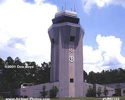
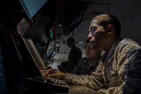
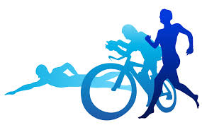

Welcome to my page!
My Family

Hey folks, thanks for stopping by. My name is Marcus, I live with my wife, Ashley and our two kids in south Georgia.
My Job
 I have been serving in the US Air Force for eight years as an air traffic controller. My job is to issue instructions to aircraft to ensure they do not hit another aircraft or the ground. It can be a stressful job, but also offers a very rewarding feeling after working a busy shift.
We have two separate entities that work together. Most people are familiar with the control tower. The tower is responsible for the safe flow of aircraft on the runway and within roughly five miles of the airport, usually up to 2,500ft.
The other half of the career field is the radar approach control or RAPCON. This involves using a radar screen to control aircraft within 100 miles of the airport and up to 25,000ft.
My Hobby
Outside of work my biggest hobby is the sport of triathlon. Triathlon consists of three sports; swimming, biking and running with no break inbetween. I competed in my first triathlon in 2012. After that I caught the "triathlon bug" and have been hooked ever since.
This site will be dedicated to my love of triathlon. On the other pages I will explain more of each segment in higher detail. Click though the different links on the navbar above to learn more about each.